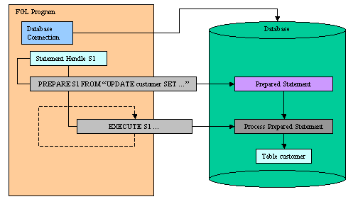
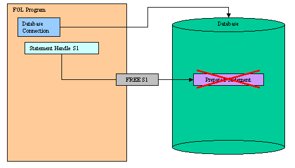

Summary:
See also: Transactions, Positioned Updates, Static SQL, Result Sets, SQL Errors, Declaring a cursor (DECLARE).
BDL includes basic SQL instructions in the language syntax (see Static SQL), but only a limited number of SQL instructions are supported this way. Dynamic SQL Management allows you to execute any kind of SQL statement, hard coded or created at runtime, with or without SQL parameters, returning or not returning a result set.
In order to execute an SQL statement with Dynamic SQL, you must first prepare the SQL statement to initialize a statement handle, then you execute the prepared statement one or more times:

When you no longer need the prepared statement, you can free the statement handle to release allocated resources:

When using insert cursors or SQL statements that produce a result set (like SELECT), you must declare a cursor with a prepared statement handle.
Prepared SQL statements can contain SQL parameters by using ? placeholders in the SQL text. In this case, the EXECUTE or OPEN instruction supplies input values in the USING clause.
To increase performance efficiency, you can use the PREPARE instruction, together with an EXECUTE instruction in a loop, to eliminate overhead caused by redundant parsing and optimizing. For example, an UPDATE statement located within a WHILE loop is parsed each time the loop runs. If you prepare the UPDATE statement outside the loop, the statement is parsed only once, eliminating overhead and speeding statement execution.
This instruction prepares an SQL statement for execution in the current database connection.
PREPARE sid FROM sqltext
Prepared SQL statements can be executed with the EXECUTE instruction, or, when the SQL statement generates a result set, the prepared statement can be used to declare cursors with the DECLARE instruction.
A statement identifier (sid) can represent only one SQL statement at a time. You can execute a new PREPARE instruction with an existing statement identifier if you wish to assign the text of a different SQL statement to the statement identifier. The scope of reference of the sid statement identifier is local to the module where it is declared.
The SQL statement can have parameter placeholders, identified by the question mark (?) character.
Resources allocated by PREPARE can be released later by the FREE instruction.01FUNCTION deleteOrder(n)02DEFINE n INTEGER03PREPARE s1 FROM "DELETE FROM order WHERE key=?"04EXECUTE s1 USING n05FREE s106END FUNCTION
This instruction runs an SQL statement previously prepared in the same database connection.
EXECUTE sid [ USING pvar {IN|OUT|INOUT}
[,...]
] [ INTO fvar [,...] ]
If the SQL statement has (?) parameter placeholders, you must specify the USING clause to provide a list of variables as parameter buffers. Parameter values are assigned by position.
If the SQL statement returns a result set with one row, you can specify the INTO clause to provide a list of variables to receive the result set column values. Fetched values are assigned by position. If the SQL statement returns a result set with more than one row, the instruction raises an exception.
The IN, OUT or INOUT options can be used to call stored procedures having input / output parameters. Use the IN, OUT or INOUT options to indicate if a parameter is respectively for input, output or both. For more details about stored procedure calls, see SQL Programming.
01MAIN02DEFINE var1 CHAR(20)03DEFINE var2 INTEGER0405DATABASE stores0607PREPARE s1 FROM "UPDATE tab SET col=? WHERE key=?"08LET var1 = "aaaa"09LET var2 = 34510EXECUTE s1 USING var1, var21112PREPARE s2 FROM "SELECT col FROM tab WHERE key=?"13LET var2 = 56414EXECUTE s2 USING var2 INTO var11516PREPARE s3 FROM "CALL myproc(?,?)"17LET var1 = 'abc'18EXECUTE s3 USING var1 IN, var2 OUT1920END MAIN
This instruction releases the resources allocated to a prepared statement.
FREE sid
All resources allocated to the SQL statement handle are released.
01FUNCTION update_customer_name( key, name )02DEFINE key INTEGER03DEFINE name CHAR(10)04PREPARE s1 FROM "UPDATE customer SET name=? WHERE customer_num=?"05EXECUTE s1 USING name, key06FREE s107END FUNCTION
EXECUTE IMMEDIATE sqltext
The EXECUTE IMMEDIATE instruction passes an SQL statement to the database server for execution in the current database connection.
The SQL statement must be a single statement without parameters, returning no result set.
This instruction performs the functions of PREPARE, EXECUTE and FREE in one step.01MAIN02DATABASE stores03EXECUTE IMMEDIATE "UPDATE tab SET col='aaa' WHERE key=345"04END MAIN